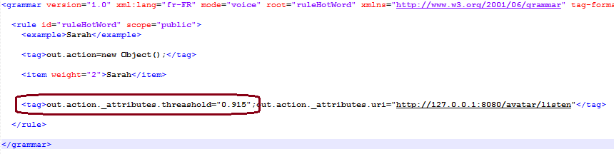

Confidence et mot-clé
Rappel: La confidence gère le mot-clé déclencheur de l'écoute uniquement. Les règles ne sont pas gérées par la confidence.
La confidence est la valeur de pourcentage comprise entre 0 et 1 pour laquelle une phrase dictée (dans le microphone) sera acceptée comme le mot-clé qui déclenchera l'écoute:
- Plus la valeur de confidence est basse, plus n'importe quelle phrase ou bruit de fond sera vu comme le mot-clé déclencheur
- Plus la valeur est haute, plus il faudra être précis dans la diction du mot-clé déclencheur
Il faut donc trouver le bon compromis.
Attention aux valeurs trop basses: vous risquez d'avoir le client se déclenchant tout le temps et pour n'importe quel bruit de fond dans la pièce.
Attention aux valeurs trop hautes: vous risquez d'avoir le client qui ne réagit plus au mot-clé
Le client Windows est prévu pour que la confidence du mot-clé s'incrémente automatiquement lorsque le nombre de faux positifs définis dans la propriété increased_threashold est atteinte (voir la propriété).
La confidence par défaut à l'installation du client est définie à "0.900", ce qui est normalement une confidence correcte et plutôt basse dans un environnement saint et un microphone acceptable.
Pour visualiser et/ou changer manuellement la confidence du mot-clé:
- Ouvrez le fichier c:\Dossier d'install du client\hotword\hotword.xml

- Changer la valeur du Tag out.action._attributes.threashold par la confidence que vous voulez
- par exemple:<tag>out.action._attributes.threashold="0.890";out.action_attribu....
- Sauvegardez le fichier
- La nouvelle confidence est directement reconnue par le client, il n'est pas nécessaire de le redémarrer.
Créé avec HelpNDoc Personal Edition: Générateur d'aides CHM gratuit